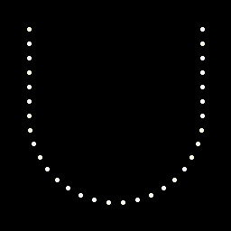

Reuse: Solution (Night Sky)
(back to Reuse) (back to Reuse solution) (to Night Sky) (to Night Sky solution)
Red 246: In Night Sky, the dots with 246 red value clearly form the letter U, as seen in this image:

(Click here to view image on its own page)
We get u.